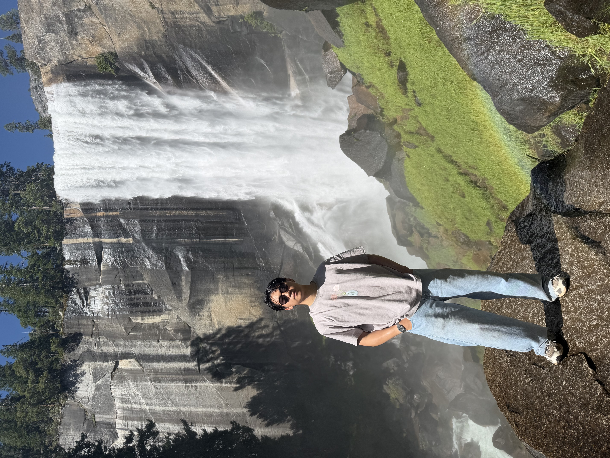
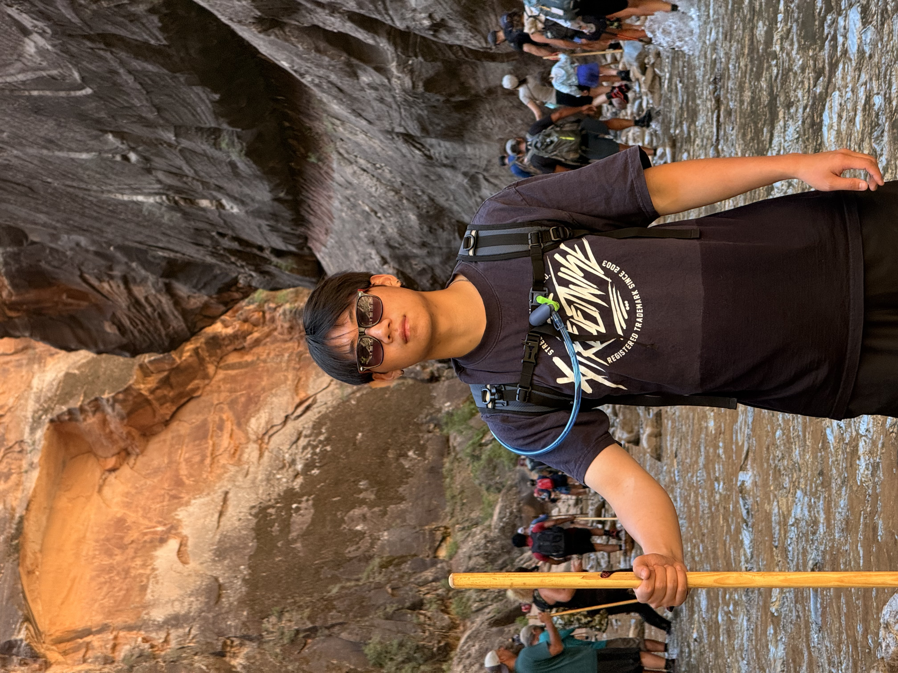
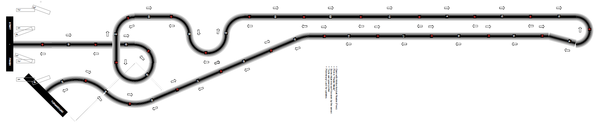
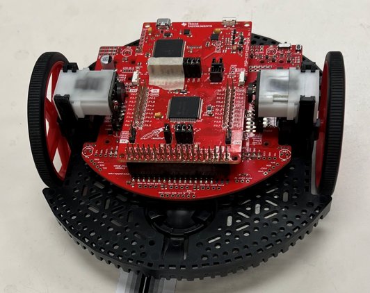

I'm a UCLA Electrical Engineering student, and what I like most is taking a system from a rough idea to something I've actually built, tested, and proven to work. I'm drawn to the hands-on side of EE — building the physical thing, not just simulating it — and I look for projects that push me across the whole stack, from circuit design and firmware to live testing and real-world validation. I've led a cross-functional team through a full build cycle, and I care more about proving a design actually works than assuming it does.


HeatSense is a safety system that watches a stovetop with a thermal camera and a PIR motion sensor, then warns before a fire starts. I led a 4-person team on this one, splitting the build across hardware, firmware, and testing and keeping us on track with a shared Gantt chart. My own piece was the embedded pipeline — pulling frames off the thermal array through an ESP32, then combining thermal rate-of-change with PIR presence data so the classifier could tell "someone's actively cooking" apart from "the stove was left on unattended." We validated the whole system together through a live-fire test campaign before calling it done.
This is an autonomous robot that follows a line on the floor and handles intersections entirely on its own, built on the MSP432 microcontroller. I designed the whole control loop myself — reading eight IR sensors to track the line, feeding that into a custom PD controller to keep the robot centered, and layering in intersection detection so it could recognize a checkpoint and execute a full spin without any human input. I also built in adaptive speed control, so it moves faster on straightaways and automatically slows through turns instead of running at one fixed speed the whole course.

